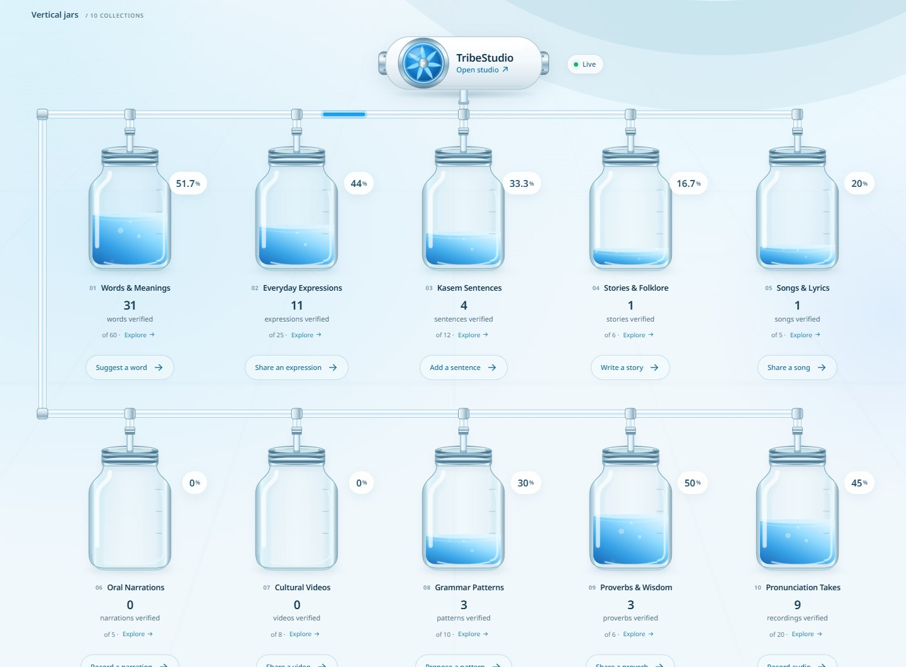
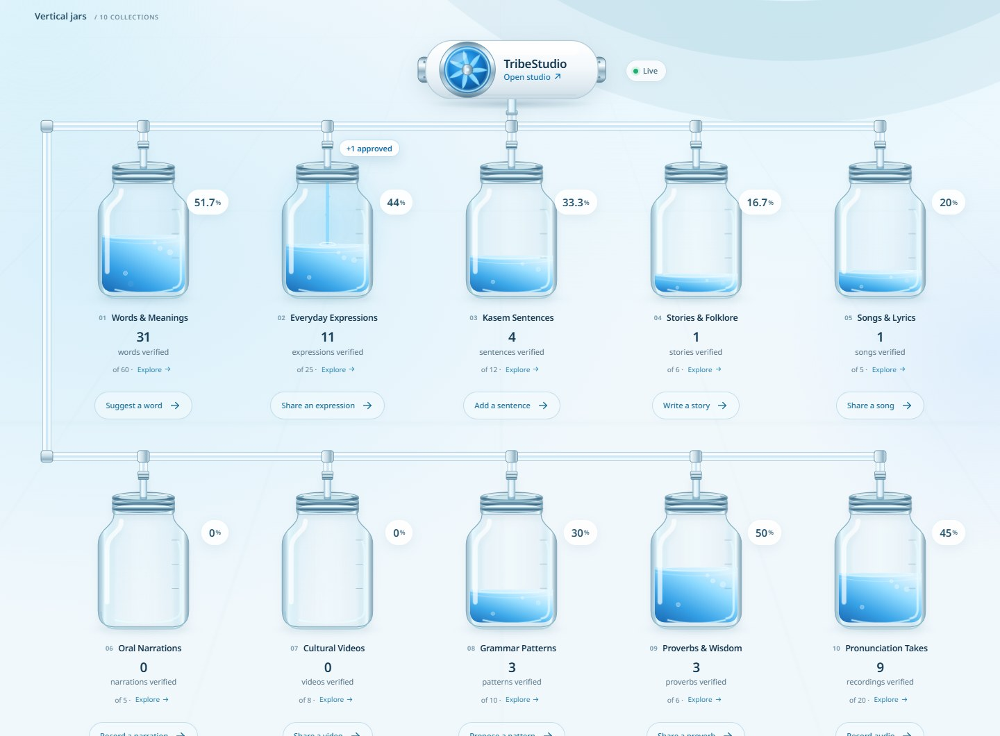
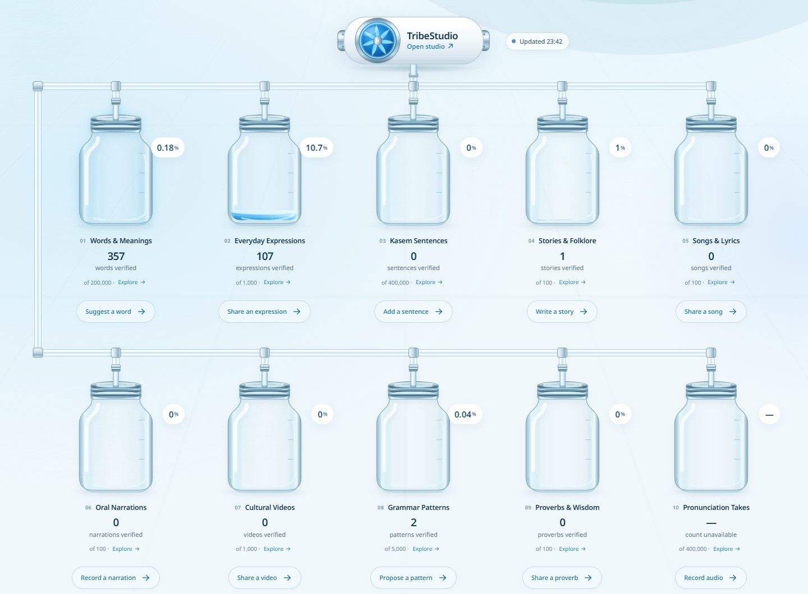
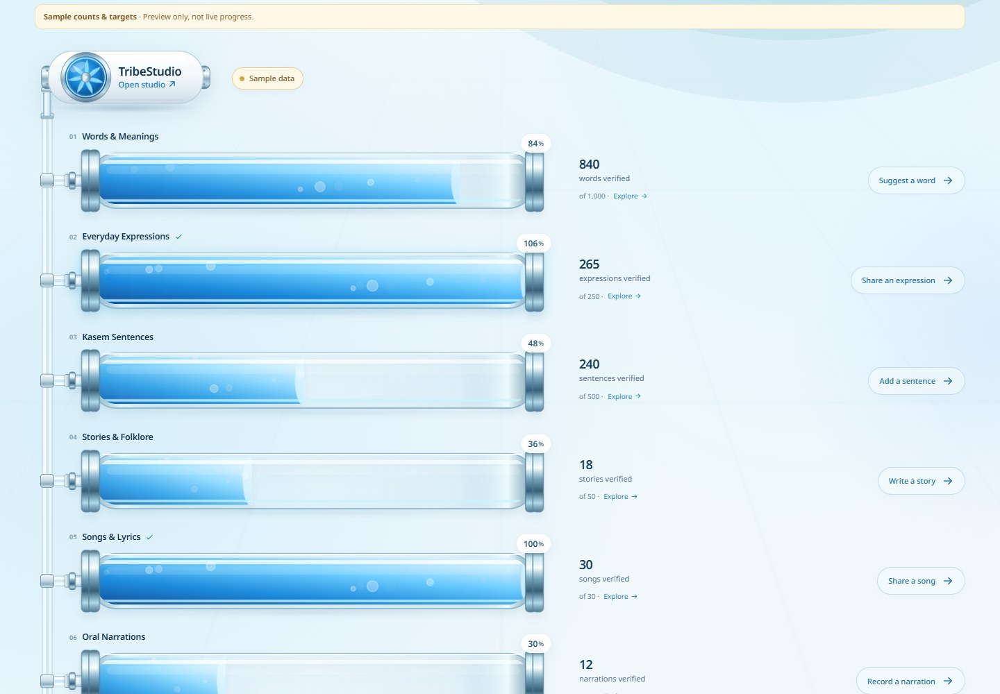
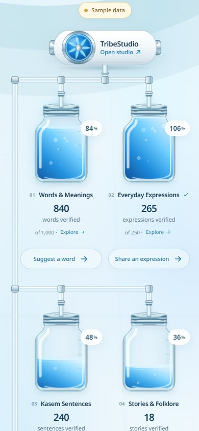

Our progress page now shows where verified contributions come from and where they go. TribeStudio sits at the top of the page as a pump, glass pipes run to every collection, and when a reviewer approves a contribution you can watch it travel down the pipe into its own jar.
This update is built and tested, and it is waiting to be released. The availability section below explains what that means.
Every contribution to Indigen World is made and reviewed in TribeStudio. On the progress page, TribeStudio is now the pump that feeds the whole network. Select it to open the studio.
When an approval is published, a short pulse of blue liquid leaves the pump, runs along the pipes and drops into the matching collection. Only that collection’s jar receives it. The jars share a supply line, but no liquid ever passes from one collection to another: each one fills on its own.

When the liquid reaches the jar, it pours in, a ripple spreads across the surface and a small “+1 approved” label appears beside the inlet. The fill then rises to the new total. If several approvals for the same collection arrive close together, the page shows them as one truthful batch, such as “+3 approved”.

The numbers never wait for the animation. A count updates the moment the approval is recorded, and if you switch views, lose your connection or come back to a hidden tab, the page simply shows the correct totals. Approvals counted before you opened the page are history: they are never replayed as if they were happening now.
Our launch targets are ambitious, so most collections are still a small fraction of one percent. Each jar now fills to exactly its approved total divided by its target, and percentages keep enough precision to tell a little progress from none. 357 words of 200,000 shows as 0.18%. Two grammar patterns of 5,000 now shows as 0.04%, where the page used to round it to 0%. A jar is never given a fake minimum fill to look busier.

While connecting the pipes, we checked every collection against what “verified” promises:
Targets are unchanged. Counting happens on our servers, and the page receives only a collection, a number and a time. It never receives a contributor’s name, a private note or unpublished work.
The horizontal tanks are connected too: one trunk runs down the left side, with a branch into the end of each tank, and the liquid fills from left to right. Local pots and the data table keep their own layouts and show the same verified totals; in those views an approval briefly highlights its collection instead of travelling.

On a phone, all ten jars sit in two columns with a slim supply pipe down the side, so you can see every collection without swiping sideways. Tanks become compact rows with their numbers underneath.

The small label beside the pump says exactly what you are looking at. Live means the page is connected and shows approvals within moments of their being recorded. Updated with a time means the totals were counted at that time. Reconnecting and Offline mean what they say.
Pause motion at the top of the page stops the decorative movement. If your device asks for reduced motion, approvals appear as a still highlight instead of a moving pulse. Screen readers hear a short, polite summary of new approvals rather than every effect.
This update is implemented and has been tested end to end against a local copy of our database, but it is not live yet. It needs the new counting service, its security rule and two database indexes to be released together with the website. Until then, indigenworld.com/progress continues to show the current design. We will update this article when the release is confirmed.